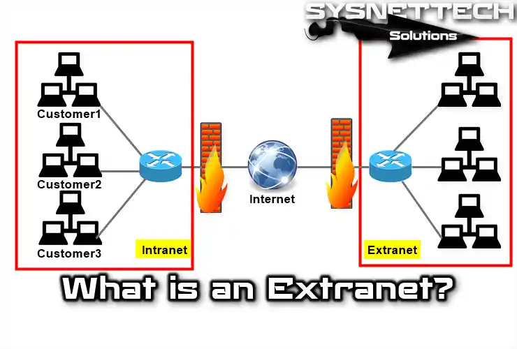

An extranet is a controlled private network that allows external users limited access to an organization’s system.
An extranet is an extension of an intranet that allows controlled access to external users such as clients or partners. It uses secure login systems to share selected information.
Extranets are important because they facilitate secure collaboration between organizations, enabling the sharing of information and resources while maintaining appropriate security measures.